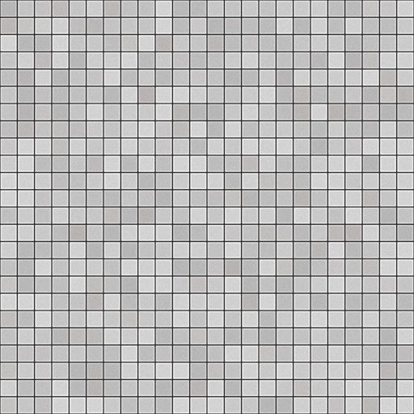

Flight Tracker
A globe of live flight paths, drawn in three.js over a dark topographic world.
FormSpace
MechanismNavigate
EngineWebGL
Jeantimex · 4 works · complete source in this repository
A flight globe, a water surface, a lenticular lens and rain on glass — four WebGPU scenes with a physical streak.
飞行地球、水面、光栅透镜、玻璃上的雨。四件带物理直觉的 WebGPU 场景。

Preview from the source repositoryA globe of live flight paths, drawn in three.js over a dark topographic world.
Evan Wallace's water rewritten for WebGPU: refraction, reflection and a draggable light.
A WebGPU lenticular print: tilt the lens and the image shifts between frames.
Rain on a window, refracted through a WebGPU surface: a study in droplets and light.